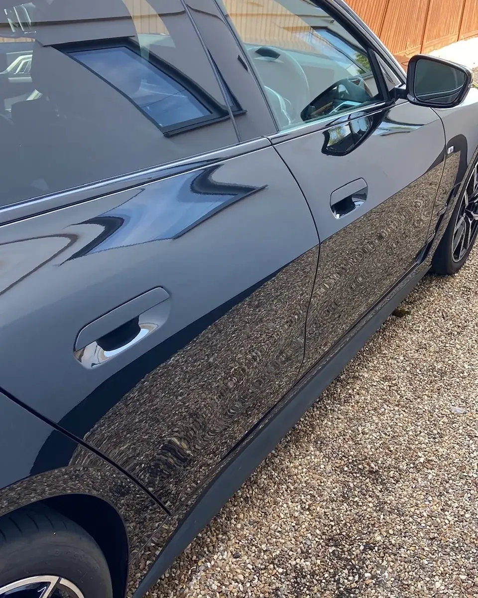
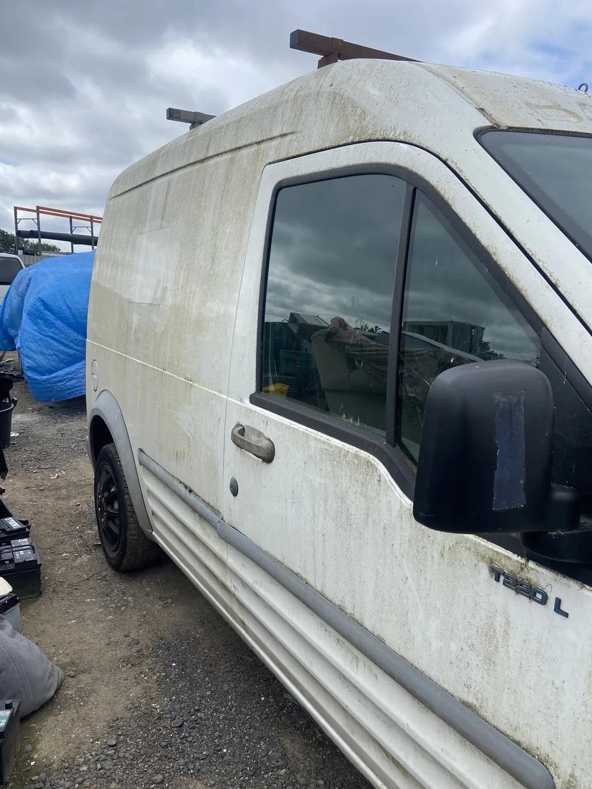
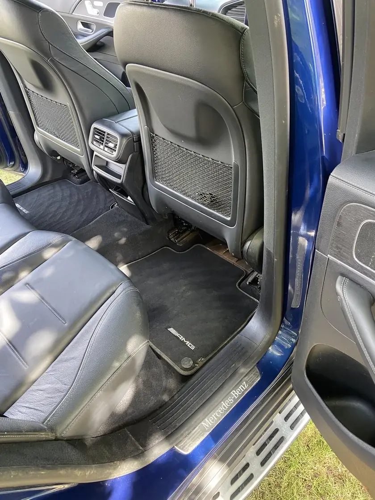

Exterior, interior and full valets
Refresh the areas that matter most, or choose a complete inside-and-out clean.
From £25
Drop your vehicle off in Marks Tey and collect it looking, feeling and smelling fresh. JF offers focused valeting, deep interior care, paint correction and ceramic protection for customers across Colchester and the surrounding area.

From an affordable valet to long-lasting paint protection, each service is built around the condition of your vehicle and the finish you want to achieve.
Refresh the areas that matter most, or choose a complete inside-and-out clean.
From £25Lift dirt from interior surfaces, seats, carpets and floor mats for a fresher cabin.
From £10Remove bonded contamination, improve gloss and reduce visible swirl marks.
From £30Add long-lasting protection and a high-gloss finish that makes the paint stand out.
From £110This is the same van before and after JF worked on it. Move the slider to compare the finish.

 BeforeAfter
BeforeAfter
JF was built around one simple feeling: handing a vehicle back looking noticeably cleaner and seeing the owner enjoy the difference.
Every booking is arranged directly, making it easier to choose a date and time that suits both you and JF.
Browse the current services and decide what your vehicle needs.
Send the details of your vehicle and suggest a suitable date.
Bring it to the agreed Marks Tey location at the arranged time.
Return once the work is finished and enjoy the transformation.

JF Auto Detailing began in 2024 when the owner started cleaning cars to earn money for a holiday with his grandad. What began as a goal quickly became a real interest in car care and grew into a detailing business based in Marks Tey.
The best part is still the same: turning a dirty vehicle into something that looks, feels and smells fresh, then seeing the customer’s reaction.
Send a text with your vehicle and preferred service, then agree a suitable date directly.